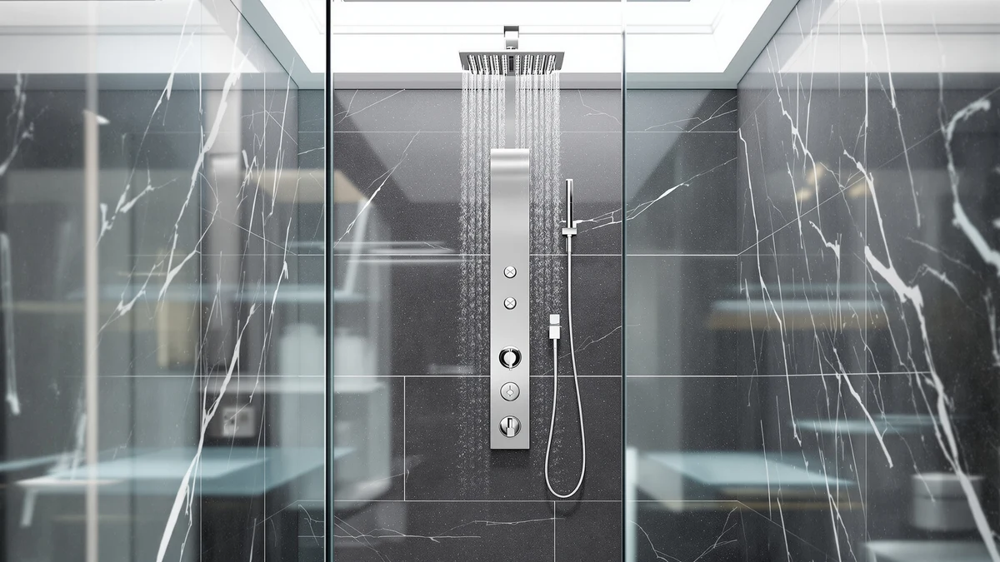

How to Wash Shower Glass: Complete Guide (2026)
Prices and picks verified as of September 2026. Independent, reader-supported reviews.


Things to Know Before You Buy
- Hard water spots are mineral deposits, not dirt, so plain soap and water won't remove them. You need an acid like vinegar to dissolve the calcium and magnesium first.
- Squeegeeing the glass after every shower cuts the need for a deep wash, since standing water is what leaves mineral spots and soap film behind in the first place.
- A distilled white vinegar and water solution is safe on standard tempered glass, but check with the manufacturer before using it on tinted or ceramic-coated glass, since some coatings are vinegar-sensitive.
- A full wash takes about 30 minutes, including a 10 to 15 minute soak, and costs under $10 in supplies you likely already have on hand.
- Waiting more than two weeks between washes lets soap scum bond with hard water minerals, roughly doubling the scrubbing time needed to remove it.
How to wash shower glass without leaving hard water spots or streaks behind comes down to one habit most people skip: squeegeeing the glass while it's still wet, before soap film and minerals get the chance to dry onto the surface. Once that film sets, it takes a vinegar soak and real scrubbing to remove, and skipping that step is why the same section of glass keeps clouding over every few weeks no matter how much glass cleaner gets sprayed on it.
The five steps below follow the same order glass manufacturers and cleaning professionals recommend for tempered shower doors and panels: rinse, apply an acid-based solution, scrub what the soak loosens, squeegee dry, then finish with a protective coating that slows the next round of buildup. None of it requires bleach or ammonia, and a full wash takes about 30 minutes once the vinegar has time to sit. We researched glass manufacturer care guides and cross-checked them against verified owner reviews on tempered-glass shower systems to confirm which methods keep the glass clear longer, rather than looking clean only until the next shower.
What You'll Need
- Supplies: distilled white vinegar, dish soap or a dedicated glass cleaner, and a few microfiber cloths
- Tools: a squeegee and a spray bottle
Step 1: Clear the Glass and Rinse with Hot Water
Start by clearing everything off the shower shelf and caddy, since bottles and razors block access to the corners and bottom edge where soap scum builds up thickest. Turn the shower on hot for two to three minutes and let the spray hit the glass directly instead of only running at your feet.
Hot water alone won't remove hard water spots, but it softens the top layer of soap film enough that the vinegar solution in the next step penetrates faster instead of sitting on a dry, bonded layer. Skip this step on a cold morning and the soak that follows takes noticeably longer to work.
While the glass is still warm and wet, check for cracked caulk or loose hardware around the door track. Vinegar can seep behind failing caulk and reach the wall material underneath, so it's worth flagging before you start scrubbing.
Step 2: Spray On a Vinegar-Based Cleaning Solution
Combine equal parts distilled white vinegar and warm water in a spray bottle and coat the entire glass surface, paying extra attention to the bottom third of the door and any handles, where water sits longest and hard water spots concentrate. The acetic acid in vinegar dissolves the calcium and magnesium deposits that plain soap and water can't touch.
Let the solution sit for 10 to 15 minutes. Homes with visibly hard water, or glass that hasn't been washed in more than a month, benefit from the full 15 minutes, while a lighter weekly wash only needs 5 to 10. You'll often see the film loosen and turn slightly cloudy as the vinegar reacts.
If your glass has a tinted or ceramic protective coating, check the manufacturer's care instructions before using vinegar at full strength. Some coated glass reacts poorly to undiluted vinegar over repeated use, so diluting to one part vinegar and two parts water is the safer default on treated glass.
Step 3: Scrub Away Soap Scum and Hard Water Spots
Use a non-abrasive sponge, a nylon-bristle brush, or a soft cleaning pad to work the glass in overlapping strokes rather than tight circles. Circular scrubbing tends to leave faint swirl marks that catch the light once the glass dries, especially on frameless doors.
For stubborn white spots that don't lift with the sponge, dip a soft toothbrush directly in undiluted vinegar and work the spot in short strokes. Corners, the bottom door track, and the area around hinges usually need this closer attention, since they trap standing water longer than the flat glass surface.
Avoid steel wool, powdered cleansers, or anything labeled abrasive, even on heavily etched glass. These scratch the glass at a microscopic level, and those scratches collect soap scum and minerals faster afterward, making the problem worse within a few washes.
Step 4: Rinse the Glass and Squeegee It Dry
Rinse the entire glass surface thoroughly with warm water to remove every trace of vinegar and loosened soap residue. Leftover cleaning solution attracts dust and new mineral deposits faster than bare glass does, so a full rinse matters as much as the scrubbing itself.
Starting at the top corner, pull a squeegee down the glass in a single smooth stroke, wiping the blade dry between passes and overlapping each stroke slightly. Working top to bottom, rather than side to side, keeps water from re-pooling on sections you already cleared.
This is also the step people skip most often, and it's the single biggest reason the same water spots return within days. A squeegee pass takes under two minutes and does more to prevent buildup long term than any deep clean that follows it.
Step 5: Buff Dry and Apply a Protective Coating
Buff any remaining moisture off the glass with a clean, dry microfiber cloth, working in the same top-to-bottom direction as the squeegee pass. Microfiber won't leave the lint or streaks that paper towels and regular cloth towels do.
Once the glass is fully dry, apply a hydrophobic glass treatment, the same category of product sold for car windshields, in a thin, even layer with a clean cloth. These coatings fill the microscopic pores on the glass surface so water beads up and rolls off instead of drying flat and leaving mineral traces behind.
Reapply the coating every four to six weeks with regular use. Glass treated this way still needs a squeegee pass after each shower, but the interval between full vinegar washes typically stretches from every one to two weeks out to once a month.
Common Mistakes to Avoid
The most common mistake is reaching for a general household glass cleaner with ammonia and expecting it to handle hard water spots. Ammonia cuts through grease and light dust well, but it doesn't dissolve calcium or magnesium deposits, so ammonia-based sprays leave mineral spots untouched no matter how many times you wipe. Vinegar or a dedicated hard water remover breaks the mineral bond that ammonia can't.
Scrubbing with steel wool, a melamine sponge, or powdered abrasive cleanser is a close second. These leave fine scratches that aren't visible when the glass is dry but show up as a permanent haze once the shower steams up again, and the scratches themselves become new spots where soap scum collects.
Skipping the vinegar soak and scrubbing dry residue right away is another shortcut that backfires. Dried soap film and hard water deposits bond directly to the glass, so scrubbing without softening them first smears the residue around instead of lifting it off, and it takes more effort for a worse result.
Letting the glass air-dry after every shower, instead of only during a deep clean, is the mistake that brings people back to this guide every few weeks. Standing water evaporates and leaves mineral traces behind every time, so a 30-second squeegee pass after each shower prevents more buildup than any single deep clean, no matter how often you do it.
Our Top Picks
If your shower door glass is permanently etched or the seals around it have failed, replacing the enclosure is often more practical than another deep clean. These three shower panel towers use glass and acrylic faces that hold up better against hard water spotting than older frameless doors, and they're straightforward to keep clear with the method above.

Editor’s Pick
HSYLYPA 5-in-1 Shower Panel Tower
HSYLYPA's tempered glass control panel and acrylic backwall shed water more evenly than metal-heavy towers, and owners report soap scum wipes off with a quick vinegar pass rather than a full scrub.
$135.99
Check Price on Amazon
Best Value
MENATT LED Shower Panel Tower
The MENATT's smaller glass display panel means less surface area to keep spot-free, and reviewers consistently note it holds up well against hard water for the price.
$125.99
Check Price on Amazon
Premium Choice
VEVOR Shower Panel Tower System
VEVOR's stainless steel body limits glass to the control display alone, and verified buyers report the tempered finish resists the hazing that acrylic panels develop after repeated vinegar washes.
$106.15
Check Price on AmazonFrequently Asked Questions
How often should you wash shower glass?
Squeegee the glass after every shower, and do a full vinegar wash every one to two weeks if you have hard water, or once a month with soft water. Glass that's visibly cloudy or spotted before that interval needs attention sooner regardless of schedule.
Does vinegar damage shower glass or hardware?
Plain white vinegar is safe on standard tempered glass, chrome, and stainless steel hardware. It can dull some tinted or ceramic-coated glass and etch certain metal finishes like oil-rubbed bronze if left on too long, so check the manufacturer's care guide before using it at full strength on coated products.
What's the best homemade glass cleaner for hard water spots?
An equal-parts mix of distilled white vinegar and warm water dissolves hard water spots as well as most commercial removers, at a fraction of the price. For spots that don't lift after a 15-minute soak, a paste of baking soda and water applied with a soft cloth adds mild abrasion without scratching the glass.
Why does shower glass stay hazy after washing?
Persistent haze after washing usually points to microscopic etching from a previous cleaning with an abrasive pad or powder, not leftover residue. Etched glass traps soap scum and minerals inside the scratches themselves, and re-washing can't remove haze that's actually permanent damage to the surface. A glass polish made for etch removal, worked in with a buffing pad, is the only fix at that point.
Do glass coatings like Rain-X actually work in the shower?
Hydrophobic coatings made for windshields work on shower glass the same way, causing water to bead and roll off instead of drying flat and leaving mineral spots. Owners who apply one every four to six weeks report needing a full vinegar wash far less often, though the coating still needs a quick squeegee pass after each shower to get the full benefit.
Verdict
How to wash shower glass without watching the same water spots return within a week comes down to sequence: rinse with hot water, let a vinegar solution sit long enough to dissolve mineral deposits, scrub with something non-abrasive, then squeegee and buff before the glass air-dries on its own. Skip the soak or the squeegee pass and you're back to scrubbing dried-on residue within days, no matter how good the cleaner is. The whole process costs under $10 in supplies most people already keep under the sink, and takes about 30 minutes once a week in hard water homes.
If your glass is scratched or clouded beyond what a vinegar wash can fix, a tower with a smaller glass footprint, like the HSYLYPA 5-in-1 Shower Panel Tower, gives you less surface area to maintain going forward. Whatever setup you have, the squeegee is the habit that matters most, since it's the single step that keeps hard water from ever getting the chance to dry onto the glass in the first place.